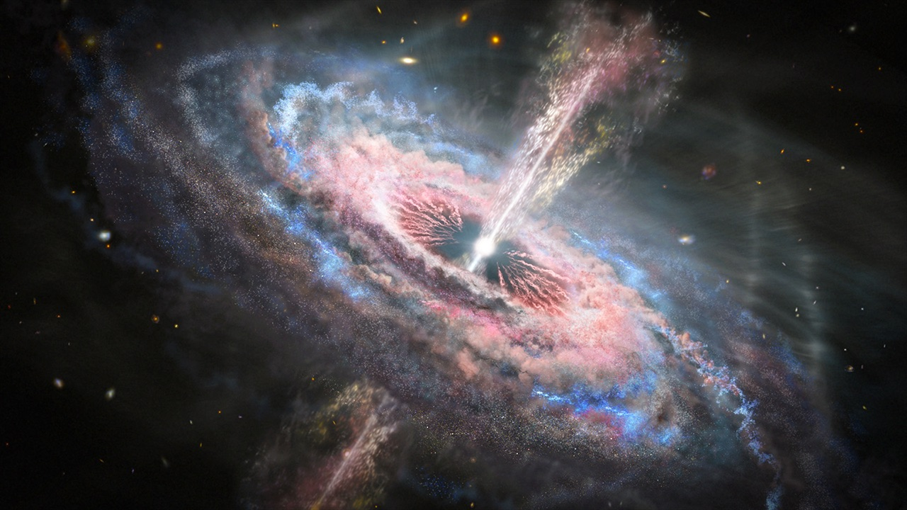

Our Milky Way
Space is immense, but the space between the gravitational zones of the 100 billion stars in our Milky Way is relatively small.The closest star to the Sun is only 4.24 light-years away, it is called Proxima Centauri or α Centauri C, but it is not a bright star, it is a red dwarf of absolute magnitude +15.49 and apparent magnitude +11.05, which seems to revolve around its two neighbors, α Centauri A and α Centauri B. Its luminosity in visible light is equal to 0.0056% of that of the Sun, it radiates almost all its light energy (85%) in the infrared. For a star to shine it must produce nuclear reactions in its center. For this it must reach a minimum mass, 8% of the mass of the Sun (M☉).
Below this mass, they are brown dwarfs or planets. Proxima Centauri with a mass equal to 12% of M☉, shines slightly. It will exist long after the Sun because it consumes very little fuel and will shine faintly for tens of billions of years. Due to its proximity, α Centauri A is the fourth brightest star in the night sky, after Sirius, Canopus and Arcturus, it is a yellow dwarf of spectral type G2V. G means that it is a yellow dwarf whose surface temperature is between 5300 K and 6000 K, like our Sun. What is a light year?
What does represent one light year ?
A light year is ≈10,000 billion km. This distance seems very large, but the Oort cloud, a region of the solar system, is ≈7500 billion km away and contains billions of icy bodies at the edge of the Sun's attraction.Gravitation is a universal force that bends space at very long distances. The gravitational influence of the Sun is therefore "limitless", however it gradually decreases, until another mass bends space towards it, and imposes its gravitational attraction.
The closest stars to the Sun are located about 4 light years away, this is the Alpha Centauri system, this system is twice as massive (≈2.13 M☉) as the solar system. At what distance, the gravitational confrontation between these two massive objects, will therefore take place?
In other words, where is the limit of influence of our Sun?
Although these two objects do not rotate around each other we could use r ≈ a√3(m/3M) which is the simplified formula of the Hill sphere, r being the radius of the Hill sphere and a the semi-major axis. Thus to get an idea of this gravitational boundary we write in Excel: =4,24*((1/(3*2,13))^(1/3)) The radius of the Hill sphere of the Alpha Centauri system (heaviest object) is ≈ 4.24 multiplied by the cube root of (m/3M) = 2.28 light years.
The gravitational influence zone of our solar system thus dies at about 4.24 - 2.28 = 1.96 light years. A celestial object (dwarf or floating exoplanet) could remain in the vicinity of this boundary, between the two systems, without being captured by one of the two.
 What is a Black Hole ?
What is a Black Hole ?
Not all stars shine, the universe is home to dark stars.Black holes are massive objects whose gravitational field is so intense that it prevents any form of matter or radiation from escaping.
Black holes are described by the general theory of relativity. When the core of a dead star is too massive to become a neutron star, it inexorably contracts until it forms the mysterious astronomical object that is the black hole.
Stellar black holes have a mass of a few solar masses to billions of solar masses. They are born as a result of the gravitational collapse of the residue of massive stars.
When the combustion by thermonuclear reactions in the core of the massive star ends, for lack of fuel, a supernova appears. This supernova can leave behind a core that continues to collapse rapidly.
A man predicted already in the 18th century, the existence of dark stars, the British physicist, astronomer and geologist, John Michell (1724 - 1793).
In his notes he wrote that when a star becomes too massive, it attracts light under the influence of its gravitational force. However, as his calculations give a density of the star corresponding to 18 billion tons in one cm3, he concludes that this cannot exist.
Today, the theory of black holes, states that they are objects so dense that their speed of release is greater than the speed of light.
The light can not overcome the gravitational force of surface and remains trapped. The theory also defines precisely the intensity of the gravitational field of a black hole. It is such that no particle crossing its horizon, theoretical boundary, can escape.
 What is a Quasars ?
Quasars (Quasi Stellar Radio-sources) are radio sources that correspond to galaxy nuclei (black holes) that are located at very large distances, several billion light years.Quasars no longer exist today, so they shine from the distant past.
Quasars are the brightest objects in the Universe but appear as strange faint stars. Images of these faint areas seen by the CFHT (Canada-France-Hawaii Telescope), show, when the signal corresponding to the quasar is subtracted, a resulting image that looks like an elliptical galaxy.
Quasars can be observed in the electromagnetic spectrum of radio waves, infrared, visible light, ultraviolet, X-rays and gamma rays.
Quasars radiate strongly and have a brightness that appears to come from hundreds of galaxies, but a quasar is about a million times smaller than an ordinary galaxy. Because of the strength of their radiation, and their frequent changes, quasars were once thought to be relatively close and faint objects, rather than distant and powerful ones.
The emission of quasars is strongly redshifted, that is to say that they move away at very high speed from the Milky Way, according to Hubble's law (v=H0d where the Hubble constant H0=73 km/s/Mpc). Most of the radio emission from quasars seems to come from a bright core of a few light-years in diameter at most.
Radio galaxies and quasars can be detected at great distances because they are extremely powerful radio sources. These signals from distant radio sources take a long time to reach the Earth, which is why radio astronomers can see the Universe as it appeared more than 10 billion years ago, going back in time to the origins of the Universe.
They hope to see the famous moment of the primordial explosion, the Big Bang.